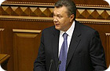
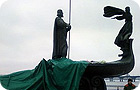
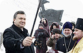
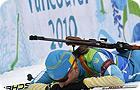

Дата эфира:
-

Янукович
— президентНовостная программа, Пятый канал, Украина
1 июня 2009 -

Обрушился памятник
Новостная программа, Пятый канал, Украина
1 июня 2009 -
Будущие губернаторы
Новостная программа, Пятый канал, Украина
1 июня 2009 -

Детальный
план инаугурацииНовостная программа, Пятый канал, Украина
1 июня 2009 -

Ванкувер-
2010Новостная программа, Пятый канал, Украина
1 июня 2009 -
Тигипко назвал
имяНовостная программа, Пятый канал, Украина
1 июня 2009 -
ЮАР перехватила корейское судно
Новостная программа, Пятый канал, Украина
1 июня 2009 -
Общенациональная забастовка
Новостная программа, Пятый канал, Украина
1 июня 2009